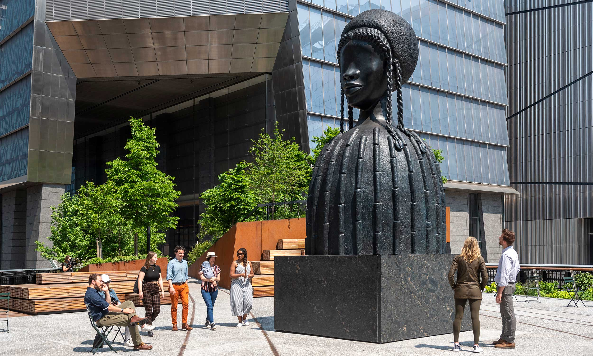

The Plinth

The Plinth is the first space on the High Line solely dedicated to a rotating series of new, monumental, contemporary art commissions. Simone Leigh’s Brick House, a tribute to Black beauty, is the inaugural artwork for the Plinth.
“Brick House is a 16-foot-tall bronze bust of a Black woman that stares resolutely facing down 10th Avenue. The work’s title refers to the term for a strong Black woman who stands with the strength, endurance, and integrity of a house made of bricks. Brick House is the first monumental work in Anatomy of Architecture, Leigh’s continuing series of sculptures that combine architectural forms like Batammaliba architecture from Benin and Togo, the teleuk of the Mousgoum people of Cameroon and Chad, and the restaurant Mammy’s Cupboard in Natchez, Mississippi.”
Leigh’s magnificent Black female figure challenges us to think more carefully about the architecture around us, and how it reflects customs, values, priorities, and society as a whole.